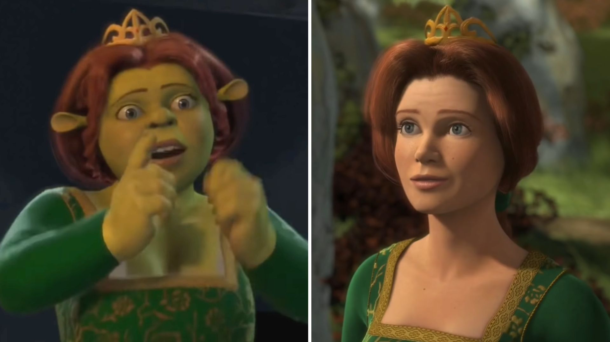

Fiona se encontraba bajo una maldición (posiblemente lanzada por el Hada Madrina) en la que se establecía la norma en la que entre el amanecer y el ocaso tendría la apariencia de una humana y en las noches tendría la apariencia de una ogro . Esta maldición solo se rompería al dar su primer beso de amor verdadero.
